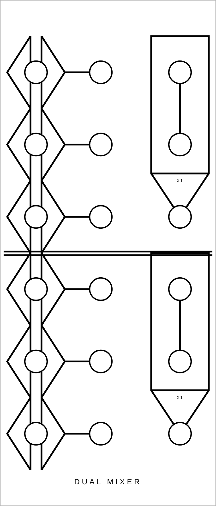

Dual Mixer
Mixer
Two mixers, each with three level-controlled inputs and one unity-gain input.
- Design
- Serge Tcherepnin
- Function
- Mixing
- Panel widths
- 2"
- Build options
- 2
Panels in this repo


How it works
Each section sums three inputs through level knobs plus one input at fixed unity gain. Chain one section's output into the other's unity input to make a single larger mixer.
Outputs can be built as 1/4", 3.5 mm or banana jacks; mixing a module's output back into its own input makes useful feedback patches.
Controls and jacks
| Name | Type | What it does |
|---|---|---|
| IN 1-3 + knobs | inputs | Level-controlled inputs. |
| x1 | input | Unity-gain input. |
| OUT | output | Mix. |
Build options
Prism Circuits Dual Mixer
- Offered as
- PCB for a 4U paperface panel (also an LW-format version)
- Format
- 4U Serge, paperface
- Schematic
- availableOriginal 1973 dual mixer pot wiring (Ken Stone's notes on sdiy.info); Prism does not publish its own
- BOM
- availablePrism BOM, kept as a Mouser cart (linked below)
- Mouser cart
- Prism Mouser cart (the Prism BOM)
The maker's own shared Mouser project: open it and choose "Buy selected items". Check what it leaves out (often pots, knobs, jacks and headers). - Documents
- Original Serge kit wiring diagram: Dual Audio Mixer (MIX/MIX board)
LW-format version: https://prismcircuits.net/products/dual-mixer-lw
Prism's product page also links its own panel art; that artwork is Prism's and is not copied here.
Prism's BOM lists 1/4" jacks; choose 1/4" or 3.5 mm jacks before ordering.
Low-Gain LGE203 Dual Audio Mixer
- Offered as
- Assembled module or DIY PCBs
- Format
- 4U Serge, Loudest Warning-style mounting
- Schematic
- availableLow-Gain schematic (Google Drive, linked below)
- BOM
- availableLow-Gain BOM (Google Drive, linked below)
- Documents
- LGE203 BOM
LGE203 schematic
Two four-input mixers; three of the four inputs on each have a level knob, matching this panel's three level-controlled inputs and one unity-gain input.
All inputs are AC-coupled (they block DC offsets), so it is an audio mixer rather than a CV mixer.
Low-Gain boards set their own jack positions; check them against the panel you use.
Ken Stone's Serge-derived designs may be built for personal use only; Serge Tcherepnin keeps all rights to his circuits. Schematics, parts lists and PCBs belong to their designers and sellers, so these pages link to them rather than copying them.
Bill of materials
Spreadsheet: dual-mixer.csv (CSV; opens in Excel, Numbers or Google Sheets). The Mouser columns are there to fill in with order links.
Makers' Mouser carts: Prism Circuits Dual Mixer: Prism Mouser cart (the Prism BOM). Each opens the maker's shared Mouser project, where you can add the whole list to your cart. They are kept by the makers, so they follow the current board revision.
All builds (3 lines)
| Section | Type | Value / part | Qty | Notes |
|---|---|---|---|---|
| Front panel (Paperface (1973)) | Panel hardware | Banana jack, colour not recorded | 12 | 4 mm |
| Front panel (Paperface (1973)) | Panel hardware | Potentiometer + knob | 6 | value from the board BOM |
| Front panel (Paperface (1973)) | Panel hardware | Knob | 6 | one per pot |
Prism Circuits Dual Mixer (1 lines)
| Section | Type | Value / part | Qty | Notes |
|---|---|---|---|---|
| Board | See the maker's BOM | Prism Mouser cart (the Prism BOM) - https://www.mouser.com/ProjectManager/ProjectDetail.aspx?AccessID=412c5cd7f7 |
Low-Gain LGE203 Dual Audio Mixer (1 lines)
| Section | Type | Value / part | Qty | Notes |
|---|---|---|---|---|
| Board | See the maker's BOM | LGE203 BOM - https://drive.google.com/file/d/1isWzHILU-V-XERhsg8r4er88zmg4AsUM/view |
Panel hardware
Front-panel parts for each panel in this repo, counted from the panel files. Board parts (resistors, ICs, trimmers) are in each build option's own BOM.
Paperface (1973)
| Part | Qty | Note |
|---|---|---|
| Banana jack, colour not recorded | 12 | 4 mm |
| Potentiometer + knob | 6 | value from the board BOM |
Paperface, 4 inputs
| Part | Qty | Note |
|---|---|---|
| Banana jack, colour not recorded | 12 | 4 mm |
| Potentiometer + knob | 6 | value from the board BOM |